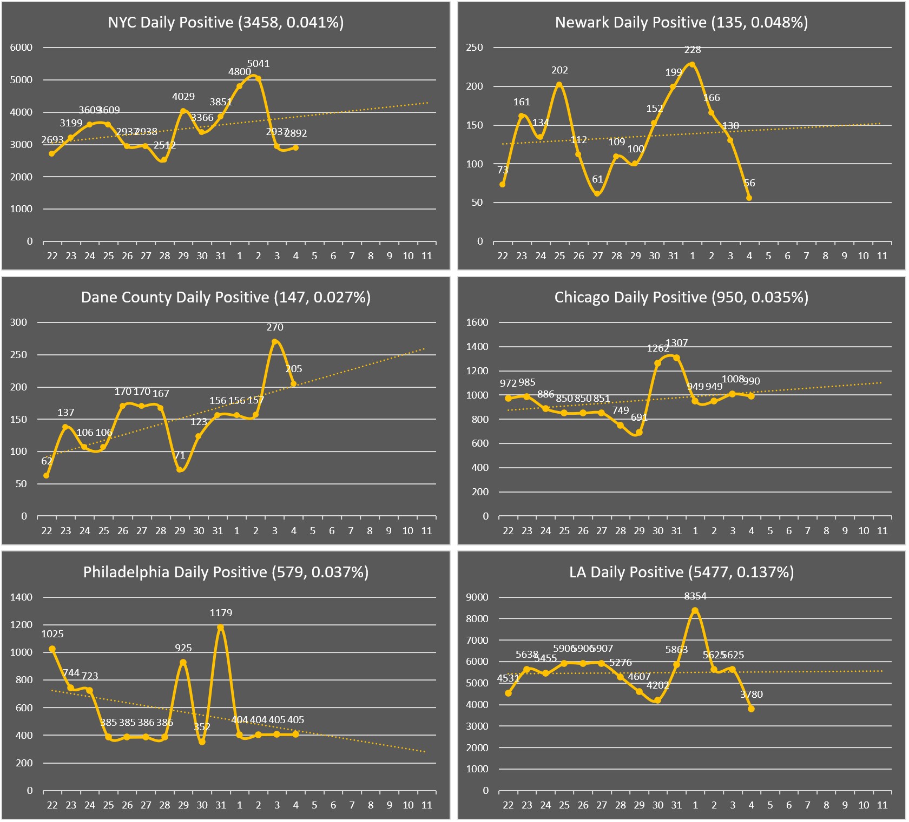
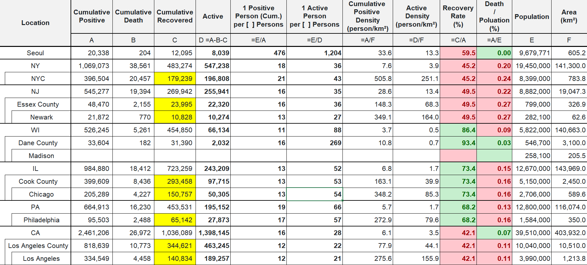

City Daily Positive (AVG Pos Num, AVG Pos Num / Population)

* The daily count numbers for NYC, Chicago, Philadelphia will not follow "official daily count", but will be counted as the increased number of cumulative positive numbers.** The reason is because "official daily count" was unable to show if there was a downward or upward trend in positive numbers.* (Dane County will keep using "official daily count", and Newark and Los Angeles do not have "official daily count")Current

* Yellow boxes on the table are estimations.* "Area" is land area (except for Seoul and NY being land+water).